Capítulo 5. Optimización de demostraciones
Con una métrica fiable (capítulo 4) y un programa declarado (capítulos 2 y 3), llega el primer acto de compilación: elegir las demostraciones. El capítulo 1 argumentó, con la teoría del aprendizaje en contexto, que el contenido exacto de las demostraciones importa menos que su selección y su orden, y que ese objeto se optimiza por búsqueda, no a mano. Este capítulo construye los algoritmos que lo hacen.
Se recorren las familias en orden de sofisticación creciente: desde la selección aleatoria de ejemplos etiquetados hasta el arranque por el propio programa, el esquema maestro–aprendiz, la búsqueda aleatoria sobre conjuntos de demostraciones y la selección dinámica por similitud. Cada técnica se mide con el aparato del capítulo anterior; las cifras comparativas salen del código y, hasta ejecutarlo, aparecen como marcadores.
Por qué pesan las demostraciones
La lección del aprendizaje en contexto, ya enunciada, conviene retomarla aquí con intención operativa. Como las demostraciones identifican la tarea —su formato, su espacio de etiquetas, su distribución— más que su corrección puntual (Min et al. 2022), una buena selección de ejemplos suele mover la calidad más que un pulido de la instrucción. Esto invierte la prioridad de la artesanía, que dedica su esfuerzo a redactar la orden perfecta: el rendimiento vive, en buena medida, en qué ejemplos se muestran y en qué orden, y eso es terreno de la búsqueda automática.
De ahí el orden del libro: las demostraciones primero (este capítulo), las instrucciones después (capítulo 6). No porque las instrucciones no importen, sino porque el retorno por unidad de esfuerzo suele ser mayor en las demostraciones, y conviene cosechar primero lo más rentable.
La herencia Demonstrate–Search–Predict.
El bootstrapping de demostraciones no nació con DSPy. Su antecedente directo es el marco Demonstrate–Search–Predict (Khattab et al. 2022), que descompuso una canalización de preguntas y respuestas en tres actos. El acto demonstrate arranca demostraciones ejecutando la propia canalización sobre ejemplos de entrenamiento y conservando las trazas que aciertan; el acto search recupera pasajes relevantes de un corpus; el acto predict genera la respuesta a partir de unos y otros. La idea germinal —que un programa puede generar sus propios ejemplos guía en lugar de recibirlos a mano— es la que DSPy generaliza y convierte en el corazón de sus optimizadores.
El cambio de DSPy sobre aquel marco es de alcance. Donde Demonstrate–Search–Predict ataba el arranque a una arquitectura concreta de recuperación y respuesta, DSPy lo desacopla: cualquier programa declarado con firmas y módulos (capítulos 2 y 3) admite bootstrapping, y el mismo mecanismo sirve para un clasificador de una etapa o para un agente de varias. La traza deja de ser un detalle de implementación y pasa a ser la unidad de aprendizaje del sistema: el objeto que se filtra, se guarda y se inyecta.
Por qué funcionan: los mecanismos.
Conviene entender por qué unos pocos ejemplos en el contexto alteran la conducta del modelo, porque cada mecanismo dicta una regla de selección. Tres explicaciones, complementarias, ordenan el panorama.
La primera es la inferencia bayesiana implícita (Xie et al. 2022). El modelo, preentrenado sobre un vasto corpus, ha aprendido una distribución sobre tareas latentes; las demostraciones actúan como evidencia que concentra la posterior sobre la tarea que comparten. Cuantas más demostraciones coherentes ve, más nítida se vuelve su inferencia de qué se le pide. La consecuencia operativa es directa: las demostraciones deben identificar la tarea sin ambigüedad, y un conjunto que mezcla formatos o criterios envía evidencia contradictoria y difumina la posterior.
La segunda es mecánica: las cabezas de inducción (Olsson et al. 2022). Ciertas cabezas de atención implementan un emparejamiento de prefijos y copia —ante un patrón [A][B]…[A], completan [B]— y son el sustrato físico de buena parte del aprendizaje en contexto. De ahí que la consistencia de formato entre demostraciones pese tanto: un formato estable es un patrón que estas cabezas copian con fiabilidad; uno irregular rompe el emparejamiento. Esto ata la teoría con la práctica del capítulo 2: el adaptador que serializa las demostraciones no es cosmético, es la pista sobre la que opera la copia.
La tercera mira el aprendizaje en contexto como un algoritmo de aprendizaje implícito: el paso hacia delante del transformer se comporta, en regímenes analizables, como un descenso de gradiente sobre las demostraciones (Oswald et al. 2023; Akyürek et al. 2023). Bajo esta lente, las demostraciones son los datos de entrenamiento que el modelo consume en inferencia, y elegirlas bien es elegir un buen conjunto de entrenamiento en miniatura: representativo, equilibrado, sin ruido. Es la justificación más limpia de por qué el problema de este capítulo es, de verdad, un problema de optimización y no de redacción. La tabla 5.1 condensa las tres reglas.
| Mecanismo | Regla que dicta |
|---|---|
| Inferencia bayesiana implícita | identificar la tarea sin ambigüedad |
| Cabezas de inducción | formato estable entre demostraciones |
| Descenso de gradiente implícito | un buen conjunto en miniatura |
Sesgos y calibración.
El aprendizaje en contexto no es neutral: arrastra sesgos sistemáticos que la selección de demostraciones debe contrarrestar. El trabajo sobre calibración (Zhao et al. 2021) identificó tres. El sesgo de mayoría: el modelo se inclina hacia la etiqueta más frecuente entre las demostraciones, de modo que un conjunto desequilibrado empuja las predicciones hacia la clase dominante. El sesgo de recencia: la última demostración pesa más que las primeras, y por eso el orden no es inocuo. Y el sesgo de token común: las etiquetas formadas por tokens frecuentes en el preentrenamiento salen favorecidas frente a las raras.
Estos sesgos explican, desde la mecánica, dos hallazgos empíricos que el libro ya citó. La extrema sensibilidad al orden (Lu et al. 2022) —la misma selección permutada cubre el rango entre el estado del arte y el azar— denota en parte el sesgo de recencia en acción. Y el papel desconcertante de las etiquetas: que sustituir las etiquetas correctas por aleatorias degrade poco la calidad (Min et al. 2022) encaja con la idea de que las demostraciones señalan sobre todo el espacio de etiquetas, el formato y la distribución de entradas, más que el mapa exacto entrada–etiqueta.
La lección para el optimizador es triple, y la búsqueda automática la aplica sin intervención humana: equilibrar las clases en el conjunto de demostraciones (contra el sesgo de mayoría), probar varios órdenes y quedarse con el que mide mejor (contra el de recencia), y no confiar en que una etiqueta correcta baste si el formato o la cobertura fallan. La calibración contextual —corregir las probabilidades con una entrada neutra— es un complemento posible, pero la vía de DSPy es estructural: en lugar de corregir un prompt sesgado, busca uno que no lo esté. La tabla 5.2 empareja cada sesgo con su respuesta.
| Sesgo | El optimizador responde |
|---|---|
| De mayoría | equilibra las clases |
| De recencia | prueba varios órdenes |
| De token común | no confía solo en la etiqueta |
El espacio de búsqueda combinatorio.
Seleccionar \(k\) demostraciones de un banco de \(N\) y ordenarlas define el espacio \(\lvert\Pi_{\text{demo}}\rvert = N!/(N-k)!\) de la ecuación (1.9), intratable a mano ya para valores modestos. Los optimizadores de este capítulo no recorren ese espacio entero: lo muestrean con estrategias que gastan pocas evaluaciones. La diferencia entre ellos está en cómo muestrean —al azar, por arranque, por similitud— y en qué señal usan para quedarse con un candidato.
Conviene tener presente el coste: cada candidato evaluado consume llamadas al modelo sobre el conjunto de validación (capítulo 2). La eficiencia muestral —cuántos candidatos hay que probar para hallar uno bueno— denota, por tanto, la frontera entre una técnica usable y una cara.
Las familias: de LabeledFewShot a KNNFewShot
La técnica más simple toma \(k\) ejemplos del entrenamiento, ya etiquetados, y los fija como demostraciones. No genera nada: usa el oro existente. Su variante de búsqueda prueba varios subconjuntos aleatorios y se queda con el que mejor mide en validación.
from dspy.teleprompt import LabeledFewShot
opt = LabeledFewShot(k=8)
compilado = opt.compile(clasificar, trainset=entreno)Es el punto de partida porque establece un baseline de optimización: si una técnica más sofisticada no supera a la selección aleatoria de ejemplos etiquetados, no compensa su coste. A menudo, sin embargo, sí lo supera, porque los ejemplos etiquetados no siempre son los más instructivos para el modelo.
BootstrapFewShot: muestreo por rechazo.
La idea central del capítulo es el bootstrapping: que el programa genere sus propias demostraciones. Se ejecuta el programa sobre ejemplos de entrenamiento; cuando la salida supera la métrica, se conserva la traza completa —entrada, pasos intermedios y salida— como demostración candidata; cuando falla, se descarta. Es muestreo por rechazo guiado por la métrica (Khattab et al. 2024).
from dspy.teleprompt import BootstrapFewShot
opt = BootstrapFewShot(metric=exactitud, max_bootstrapped_demos=4,
max_labeled_demos=4)
compilado = opt.compile(clasificar, trainset=entreno)La potencia del método nace de dos hechos. Primero, las demostraciones arrancadas incluyen los pasos intermedios que condujeron al acierto —el razonamiento de un ChainOfThought, no solo la etiqueta final—, y enseñan al modelo el cómo, no solo el qué. Segundo, en un programa de varios módulos, la traza reparte la señal de la salida final entre todos ellos, resolviendo la asignación de crédito del capítulo 1. La mejora sobre el baseline etiquetado —de % con demostraciones etiquetadas a % con arranque— se mide con el código del capítulo. La figura 5.1 dibuja el ciclo de rechazo.
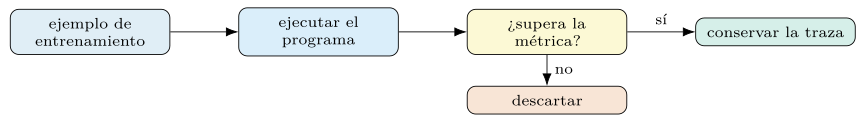
Teacher y student.
El bootstrapping no exige que sea el propio programa quien genere las trazas: puede hacerlo un modelo más capaz, el teacher, y fijarlas como demostraciones para uno más barato, el student. El resultado es una forma de destilación por contexto: el conocimiento del modelo fuerte se condensa en ejemplos que guían al débil, sin tocar pesos.
fuerte = dspy.LM("openai/gpt-4o", temperature=0.0)
opt = BootstrapFewShot(metric=exactitud, teacher_settings=dict(lm=fuerte))
compilado = opt.compile(clasificar, trainset=entreno) # student por defectoEl compromiso es económico: el teacher fuerte se usa solo durante la compilación —un coste único—, mientras que el student barato atiende la producción. Cuándo el salto de calidad justifica el coste del teacher es, como siempre, una pregunta que se responde midiendo, no suponiendo. La figura 5.2 dibuja el reparto.
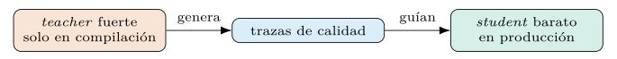
BootstrapFewShotWithRandomSearch.
El bootstrapping produce un conjunto de demostraciones, pero no hay garantía de que sea el mejor. La búsqueda aleatoria genera varios conjuntos arrancados —con distintas semillas, distintos ejemplos, distintos órdenes—, evalúa cada uno en validación y se queda con el ganador. Es la respuesta directa a la sensibilidad al orden documentada en el capítulo 1: si el orden importa y no se distingue a ojo, se prueban varios y se mide.
from dspy.teleprompt import BootstrapFewShotWithRandomSearch
opt = BootstrapFewShotWithRandomSearch(metric=exactitud,
num_candidate_programs=8)
compilado = opt.compile(clasificar, trainset=entreno, valset=desarrollo)El parámetro decisivo es el número de candidatos: más candidatos exploran mejor el espacio pero multiplican el coste de validación. La curva de mejora suele saturar —los primeros candidatos aportan mucho, los últimos poco—, y conviene fijar el presupuesto donde el retorno marginal cae. La ganancia sobre el bootstrapping simple es modesta: de % a % de exactitud.
KNNFewShot: demostraciones por similitud.
Las técnicas anteriores fijan un conjunto de demostraciones igual para toda consulta. La selección por vecinos próximos lo hace dinámico: para cada entrada, recupera del banco los ejemplos más parecidos y los usa como demostraciones de esa consulta. La similitud se mide en el espacio de embeddings del capítulo 3: cada ejemplo y cada consulta se proyectan a un vector y se comparan por coseno (Reimers y Gurevych 2019).
from dspy.teleprompt import KNNFewShot
# el optimizador envuelve la recuperacion y devuelve un programa compilado
opt = KNNFewShot(k=5, trainset=entreno, vectorizer=embedder)
compilado = opt.compile(clasificar)
# en inferencia, cada consulta recibe sus 5 demostraciones mas similaresLa intuición es que un ejemplo parecido enseña mejor que uno genérico, sobre todo en tareas heterogéneas donde una sola plantilla no cubre toda la variedad. El coste se traslada a la inferencia —hay que recuperar en cada llamada—, y la calidad depende del embedder, asunto de la sección siguiente.
Decisiones de la selección de demostraciones
¿Cuántas demostraciones conviene inyectar? La intuición de «cuantas más, mejor» falla por dos motivos. El primero, de coste: cada demostración ocupa contexto y tokens (capítulo 2), y el gasto crece con su número. El segundo, de rendimiento: la curva de mejora satura —las primeras demostraciones aportan mucho, las últimas casi nada— y, pasado un punto, añadir más diluye la señal o desborda la ventana (figura 5.3). El número óptimo es un hiperparámetro que se busca, no una constante.
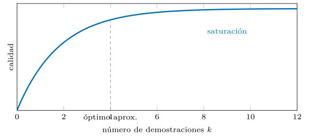
En la práctica, los optimizadores tratan el número de demostraciones como una dimensión más de la búsqueda: MIPROv2, por ejemplo, lo explora junto con las instrucciones (capítulo 6) (Opsahl-Ong et al. 2024). El valor que rinde mejor depende de la tarea, del modelo y del presupuesto, y se fija midiendo en validación. La cifra para el corpus de seguridad es demostraciones (la validación sube de forma casi monótona hasta ahí).
Selección frente a generación.
Las familias del capítulo se dividen en dos enfoques. La selección —de la que LabeledFewShot y KNNFewShot son ejemplos— escoge demostraciones de un banco ya etiquetado: no inventa nada, y su techo es la calidad de ese banco. La generación —el bootstrapping— produce demostraciones nuevas ejecutando el programa y guardando las trazas que aciertan: puede superar al banco porque incluye los pasos intermedios que condujeron al acierto, no solo la etiqueta final.
La diferencia tiene consecuencias. La selección es barata y segura, pero limitada a los ejemplos disponibles; la generación es más cara —exige ejecutar el programa muchas veces— y arriesga arrastrar errores si la métrica de filtrado es laxa, pero alcanza más calidad. Como casi todo en el libro, no hay una respuesta única: se prueban ambas y se mide cuál rinde sobre la tarea concreta. La tabla 5.3 opone ambos enfoques.
| Selección | Generación (bootstrap) | |
|---|---|---|
| Origen | un banco etiquetado | trazas del propio programa |
| Techo | la calidad del banco | incluye pasos intermedios |
| Coste | barata y segura | más cara; arriesga errores |
El papel del orden.
Las mismas demostraciones, en distinto orden, dan resultados muy distintos: el orden puede mover la exactitud desde cerca del estado del arte hasta cerca del azar (capítulo 1) (Lu et al. 2022). Para un clasificador esto es traicionero, porque el orden «bueno» no se distingue del malo a simple vista, y fijarlo a mano es apostar a ciegas.
La respuesta de DSPy es no fijarlo: BootstrapFewShotWithRandomSearch prueba varios órdenes —junto con varios subconjuntos— y se queda con el que mide mejor en validación. El orden deja de ser una decisión artesanal y se vuelve una variable más de la búsqueda. Es un ejemplo nítido de la tesis del libro: donde la artesanía adivina, la optimización mide.
Demostraciones en programas multietapa.
En un programa de varios módulos (capítulo 7), cada módulo tiene su propia firma y, por tanto, sus propias demostraciones. El bootstrapping las genera a la vez: al ejecutar el programa completo sobre un ejemplo de entrenamiento, si la salida final acierta, se conservan las entradas y salidas de cada módulo en esa ejecución, y se reparten como demostraciones a su predictor correspondiente. Una sola etiqueta final siembra demostraciones en todos los pasos.
opt = dspy.BootstrapFewShot(metric=f1_macro, max_bootstrapped_demos=4)
flujo = opt.compile(MiPrograma(), trainset=entreno)
for nombre, pred in flujo.named_predictors():
print(nombre, len(pred.demos)) # cada modulo recibe sus demostracionesAsí se resuelve la asignación de crédito del capítulo 1 sin etiquetas intermedias: la señal escasa de la salida se traduce en datos de entrenamiento para cada módulo. Es la razón por la que optimizar el programa entero supera a optimizar sus piezas por separado. La figura 5.4 lo esquematiza.
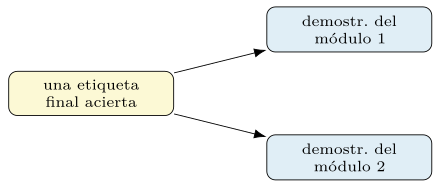
Calidad, diversidad y similitud.
¿Qué demostraciones enseñan mejor? Hay una tensión entre dos criterios. La similitud —elegir ejemplos parecidos a la consulta, como hace KNNFewShot— ayuda en tareas heterogéneas, porque muestra al modelo un caso cercano al que debe resolver. La diversidad —cubrir el abanico de clases y situaciones— previene el sesgo de mostrar siempre lo mismo y mejora la generalización. Un conjunto de demostraciones todo de una clase enseña esa clase y olvida las demás.
El equilibrio depende de la tarea y de si las demostraciones son fijas o dinámicas. Para un conjunto fijo, la diversidad —y, en clasificación, la cobertura de todas las etiquetas— suele primar. Para uno dinámico por consulta, la similitud manda. Ambos criterios son objetivos que el optimizador puede perseguir, y cuál pesa más se decide, otra vez, midiendo sobre validación.
Coste, razonamiento y el artefacto compilado
Generar demostraciones no es gratis. El bootstrapping ejecuta el programa sobre muchos ejemplos de entrenamiento, y la búsqueda aleatoria repite ese proceso por cada candidato, de modo que el coste se multiplica: un puñado de candidatos sobre unos cientos de ejemplos suma miles de llamadas al modelo. Estimar ese gasto antes de lanzar la compilación —llamadas previstas por coste medio (capítulo 2)— evita sorpresas.
Tres palancas lo contienen. La caché evita repagar ejecuciones repetidas entre candidatos. Un teacher fuerte se usa solo en la compilación, no en producción (sección 5.2). Y el resultado, una vez compilado, se guarda: las demostraciones seleccionadas son un artefacto costoso que se versiona y se reutiliza, no se regenera en cada despliegue. La corrida cara se paga una vez.
Demostraciones con razonamiento aumentado.
Cuando el módulo es un ChainOfThought, las demostraciones arrancadas no contienen solo la pareja entrada–etiqueta: contienen también el razonamiento intermedio que el modelo generó al acertar. Esas cadenas de pensamiento, fijadas como demostraciones, enseñan al modelo no solo qué responder, sino cómo razonar hasta la respuesta (Wei et al. 2022; Khattab et al. 2024). Es una diferencia de naturaleza con la selección de ejemplos etiquetados, que solo muestra el resultado.
El riesgo es la calidad del razonamiento arrancado: una cadena que llega a la respuesta correcta por un camino equivocado enseña un patrón engañoso. Por eso el filtrado por métrica no basta —premia el acierto, no el buen razonamiento—, y conviene, cuando importa, revisar o regenerar las trazas con un teacher fuerte (sección 5.2). La demostración razonada es potente porque transmite el método; hay que cuidar que el método transmitido sea el bueno. La figura 5.5 contrasta ambas demostraciones.
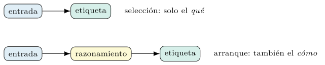
ChainOfThought conserva el razonamiento intermedio y enseña el cómo, no solo el qué. El riesgo es un razonamiento que acierta por un camino equivocado.Elegir el modelo teacher.
La destilación maestro–aprendiz (sección 5.2) plantea una decisión propia: qué modelo hace de teacher. Un teacher más capaz genera trazas mejores —razonamientos más correctos, etiquetas más fiables— y eleva el techo del aprendizaje por contexto del student. Pero un teacher demasiado distinto del student puede producir demostraciones que el modelo pequeño no sabe imitar, y entonces el salto no se materializa.
La regla práctica es medir, no asumir. Se compara el student compilado con un teacher fuerte frente al compilado por auto-bootstrapping —el propio student como maestro— y se mira si el coste extra del teacher se traduce en calidad. A veces el auto-bootstrapping basta; a veces el teacher fuerte es decisivo. El coste del teacher, recuérdese, es único y se paga en compilación, no en producción.
Cuándo las demostraciones no ayudan.
La honestidad obliga a marcar los límites. Las demostraciones no siempre mejoran, y a veces estorban. En tareas que el modelo ya domina de cero ejemplos (capítulo 3), añadirlas gasta contexto y dinero sin elevar la calidad. Demostraciones mal elegidas —de una sola clase, poco representativas, o tan largas que desbordan la ventana— pueden actuar como distractores y empeorar el resultado. Y en problemas donde la regla importa más que el ejemplo, una instrucción precisa (capítulo 6) rinde más que cualquier conjunto de demostraciones.
Reconocer esto evita el reflejo de inyectar siempre el máximo de ejemplos. La pregunta correcta no es «¿cuántas demostraciones?», sino «¿ayudan, y cuántas, en esta tarea?», y la respuesta sale de medir el programa con y sin ellas, y con distintos números, sobre validación. El optimizador, de hecho, puede decidir usar cero demostraciones si así mide mejor. La tabla 5.4 recoge las situaciones.
| Situación | Efecto |
|---|---|
| Tarea que el modelo domina | gastan contexto sin mejorar |
| Ejemplos de una sola clase | actúan como distractores |
| La regla importa más que el caso | rinde más una instrucción |
Guardar, inspeccionar y versionar.
Las demostraciones que un optimizador selecciona son un artefacto valioso: costaron llamadas al modelo, y son la mitad del prompt compilado. Por eso se guardan con el programa y se versionan, en vez de regenerarse en cada despliegue (capítulo 10). Inspeccionarlas, además, es una vía de depuración: leer qué ejemplos eligió el optimizador revela si capturó la variedad de la tarea o se quedó con casos sesgados.
compilado.save("salidas/clasif_bootstrap.json") # incluye las demostraciones
for nombre, pred in compilado.named_predictors():
for d in pred.demos:
print(nombre, d.mensaje, "->", d.etiqueta) # auditar lo seleccionadoVersionar las demostraciones cierra el círculo de reproducibilidad del libro: el mismo programa, el mismo modelo y las mismas demostraciones producen la misma conducta. Y auditarlas mantiene al humano en el bucle, capaz de detectar si el optimizador fijó un ejemplo erróneo o sesgado antes de que llegue a producción.
La mecánica del arranque: rechazo y búsqueda
El bootstrapping se formaliza como muestreo por rechazo. Sea \(p\) la probabilidad de que el programa, ejecutado sobre un ejemplo de entrenamiento, produzca una salida que supere el umbral de la métrica. Cada intento es un ensayo de Bernoulli con éxito \(p\); el número de intentos hasta obtener una demostración válida sigue una geométrica, con esperanza \[\begin{equation} \mathbb{E}[\text{intentos por demostración}] = \frac{1}{p}, \end{equation}\] de modo que reunir \(m\) demostraciones cuesta, en promedio, \(m/p\) ejecuciones del programa. La consecuencia es nítida: cuanto peor sea el programa base —menor \(p\)—, más caro resulta arrancar sus demostraciones, y un programa que casi nunca acierta no puede arrancarse a sí mismo.
De aquí sale una decisión de diseño. Si \(p\) es muy bajo, conviene un teacher fuerte (sección 5.2), cuyo \(p\) es mayor, para que el muestreo por rechazo termine en un presupuesto razonable; o relajar el umbral de la métrica durante el arranque. La calidad del programa base no solo determina el resultado: determina si el bootstrapping es siquiera viable. La figura 5.6 dibuja esa hipérbola.
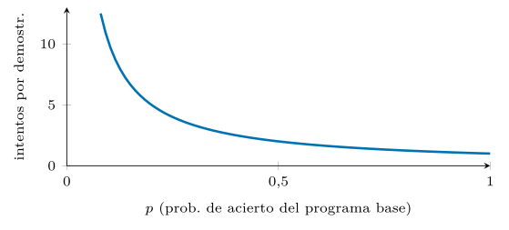
El algoritmo de BootstrapFewShot.
El procedimiento, en pseudocódigo, deja ver su sencillez y sus puntos de decisión:
def bootstrap(programa, entreno, metrica, max_demos):
demos = []
for ejemplo in barajar(entreno): # orden aleatorio (semilla fija)
if len(demos) >= max_demos:
break
traza = programa(**ejemplo.inputs()) # ejecuta y registra la traza
if metrica(ejemplo, traza) >= umbral: # muestreo por rechazo
demos.append(traza) # conserva pasos intermedios
return fijar_demostraciones(programa, demos)Tres decisiones gobiernan el resultado. El umbral de aceptación: estricto, da demostraciones de alta calidad pero pocas; laxo, muchas pero ruidosas. El orden de recorrido, fijado por una semilla para reproducir. Y el tope max_demos, que acota cuántas se conservan. La búsqueda aleatoria (sección 5.2) envuelve este algoritmo, ejecutándolo con varias semillas y topes, y eligiendo el conjunto que mejor mide.
La búsqueda como problema de bandidos.
Evaluar candidatos con presupuesto limitado es un problema de bandidos de varios brazos: cada conjunto de demostraciones es un brazo, su recompensa es la métrica en validación —ruidosa—, y el presupuesto de evaluaciones es finito. Gastar todo en medir mal muchos candidatos desperdicia; concentrar en pocos arriesga perder el bueno. La estrategia eficiente asigna más evaluaciones a los candidatos que prometen, al estilo del límite superior de confianza, que puntúa cada brazo por \[\begin{equation} \mathrm{UCB}(i) = \hat{\mu}_i + c\,\sqrt{\frac{\ln N}{n_i}}, \end{equation}\] donde \(\hat{\mu}_i\) es la media observada del candidato \(i\), \(n_i\) sus evaluaciones, \(N\) el total y \(c\) un factor de exploración: el segundo término premia a los poco probados, equilibrando explotación y exploración.
La búsqueda aleatoria simple ignora esto —reparte por igual—, y por eso los métodos con minilotes y poda (capítulo 6) la superan en eficiencia muestral: cortan pronto los candidatos claramente peores y reservan el presupuesto para los dudosos. El encuadre de bandidos explica por qué.
Complejidad muestral de la búsqueda.
¿Cuántos candidatos hay que probar para hallar uno bueno? Una cota intuitiva ayuda. Si una fracción \(f\) de las configuraciones del espacio supera cierto umbral de calidad, y se muestrean \(T\) candidatos al azar, la probabilidad de no dar con ninguno bueno es \((1-f)^T\), de modo que para hallar al menos uno con probabilidad \(1-\delta\) basta \[\begin{equation} T \ge \frac{\ln(1/\delta)}{-\ln(1-f)} \approx \frac{\ln(1/\delta)}{f}. \end{equation}\] Si una de cada veinte configuraciones es buena (\(f=0{,}05\)), bastan unos \(60\) candidatos para hallar una con un 95 % de confianza; si solo una de cada mil lo es, hacen falta miles.
La lección práctica es doble. Primero, el número de candidatos no es arbitrario: se deriva de cuán denso esté el espacio de buenas soluciones. Segundo, las estrategias informadas —bayesianas, evolutivas— elevan \(f\) de hecho al concentrar la búsqueda en regiones prometedoras, y por eso hallan buenas configuraciones con menos muestras que el azar puro. La figura 5.7 traza la cota.
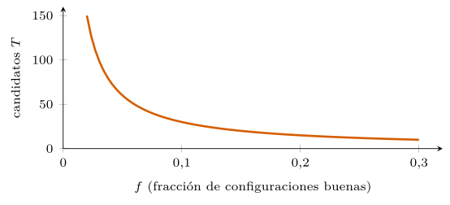
KNN: la mecánica del índice.
La selección dinámica por similitud (sección 5.2) descansa en un índice de embeddings. En la compilación, cada ejemplo del banco se proyecta a un vector con el vectorizer y se almacena; en inferencia, la consulta se proyecta al mismo espacio y se recuperan sus vecinos más próximos por similitud del coseno, que se inyectan como demostraciones de esa consulta.
from dspy.predict.knn import KNN # el recuperador que KNNFewShot usa dentro
vecinos = KNN(k=5, trainset=entreno, vectorizer=embedder)
demos = vecinos(mensaje=consulta) # los k ejemplos mas proximos a la consultaDos parámetros mandan: el número de vecinos \(k\) —el mismo compromiso señal/coste de la sección 5.3— y el vectorizer, cuya calidad decide si los vecinos son de verdad relevantes. Para bancos grandes, un índice aproximado —FAISS, HNSW— mantiene la recuperación rápida a cambio de una similitud aproximada, un canje casi siempre ventajoso.
Comparativa de familias, filtro y trazas
La tabla 5.5 resume las familias del capítulo por sus propiedades operativas: si seleccionan o generan, su coste de compilación, su coste en inferencia y el escenario donde brillan. No hay una ganadora; hay una adecuada a cada combinación de presupuesto y tarea.
| Familia | Origen | Coste comp. | Coste infer. | Brilla en |
|---|---|---|---|---|
LabeledFewShot |
selección | muy bajo | bajo | baseline |
BootstrapFewShot |
generación | medio | bajo | razonamiento |
...RandomSearch |
generación | alto | bajo | calidad máxima |
KNNFewShot |
selección | bajo | alto | tareas heterogéneas |
Leída con la tabla, la elección se vuelve un problema de ingeniería, no de moda: para un prototipo, LabeledFewShot; para exprimir calidad con presupuesto, la búsqueda aleatoria; para entradas muy variadas, KNNFewShot. La medición sobre la tarea concreta dirime los empates.
La métrica como filtro del arranque.
En el muestreo por rechazo (sección 5.5), la métrica del capítulo 4 no solo puntúa el resultado final: actúa como el oráculo que acepta o descarta cada traza candidata. Esa doble función merece atención, porque la métrica que evalúa y la que filtra el arranque no tienen por qué coincidir. Una métrica de evaluación generosa, que da crédito parcial, puede admitir como demostración una traza mediocre; una métrica de filtrado más exigente —binaria, con umbral alto— reserva el papel de ejemplo guía para las trazas claramente buenas.
El compromiso es el de todo clasificador binario, ahora aplicado al filtro. Un filtro laxo produce muchas demostraciones, pero algunas serán falsos positivos: trazas que superaron el umbral por suerte o por un razonamiento torcido que acertó la etiqueta (sección 5.4). Esas trazas enseñan un patrón engañoso. Un filtro estricto produce demostraciones de alta calidad, pero pocas, y si la probabilidad de éxito \(p\) ya era baja, puede agotar el presupuesto sin reunir las suficientes. La elección del umbral es, recordando la ecuación (5.1), la elección de \(p\), y con ella del coste y la calidad del arranque.
La recomendación práctica desacopla las dos métricas. Para filtrar, conviene una condición estricta que garantice que cada demostración es un buen modelo a imitar —en clasificación, etiqueta exacta; en tareas con razonamiento, etiqueta exacta y, si es posible, una comprobación de la cadena—. Para evaluar el programa compilado, se usa la métrica de producto que de verdad importa (capítulo 4). Separar ambas evita el error sutil de optimizar las demostraciones contra el mismo crédito parcial que luego infla los resultados.
Un ejemplo trazado en el SOC.
Conviene aterrizar el arranque sobre el caso corriente del libro: clasificar una línea de registro de un centro de operaciones de seguridad. Supóngase un módulo ChainOfThought con la firma mensaje -> categoria y un ejemplo de entrenamiento etiquetado como exfiltracion. El optimizador ejecuta el programa sobre ese ejemplo y obtiene una traza completa:
# ejemplo de entrenamiento (oro)
ej = Example(mensaje="conexion saliente 8.8.8.8:443, 2.1 GB en 40s, host RRHH",
categoria="exfiltracion")
# traza producida por el programa al ejecutarse sobre ej.mensaje
razonamiento = ("Volumen alto saliente (2.1 GB) en poco tiempo desde un host "
"no tecnico hacia una IP externa: patron de fuga de datos.")
categoria_pred = "exfiltracion"
# la metrica de filtrado (etiqueta exacta) acepta la traza:
# metrica(ej, pred) == 1 -> se conserva como demostracionComo la predicción coincide con el oro, el filtro acepta la traza y la fija como demostración. No se guarda la pareja mensaje -> categoria: se guarda la terna mensaje -> razonamiento -> categoria, con la cadena de pensamiento que llevó al acierto (sección 5.4). Esa demostración, serializada por el adaptador (capítulo 2), se incrusta en el prompt compilado y queda disponible para toda consulta futura:
# fragmento del prompt compilado (una demostracion arrancada)
Mensaje: conexion saliente 8.8.8.8:443, 2.1 GB en 40s, host RRHH
Razonamiento: Volumen alto saliente en poco tiempo desde un host no
tecnico hacia una IP externa: patron de fuga de datos.
Categoria: exfiltracionEl contraste con la selección etiquetada es palpable. LabeledFewShot habría incrustado solo mensaje -> categoria, sin el razonamiento; el arranque añade el cómo. Y si la predicción hubiera fallado —digamos, benigno—, el filtro habría descartado la traza, y el optimizador habría seguido con el siguiente ejemplo hasta reunir su cupo. La mejora medida de este arranque sobre el baseline etiquetado, en el corpus de seguridad, queda en subir la exactitud de % (etiquetado) a %.
La escalera de candidatos.
La búsqueda aleatoria (sección 5.2) no genera candidatos homogéneos: ensaya una escalera de estrategias de complejidad creciente y se queda con la que mejor mide en validación. Entender esa escalera evita tratar el método como una caja negra. Los primeros peldaños son fijos: el programa de cero ejemplos —sin demostraciones, como cota inferior—, y el de solo ejemplos etiquetados —equivalente a LabeledFewShot—. El tercero es el arranque vainilla, una pasada de BootstrapFewShot con la semilla por defecto. Los peldaños restantes, hasta num_candidate_programs, son arranques con semillas distintas: cada uno baraja el entrenamiento de otro modo (sección 5.5) y produce un subconjunto y un orden diferentes. En pseudocódigo, la envoltura es transparente:
def random_search(programa, entreno, valset, metrica, n_candidatos):
candidatos = [sin_demos(programa), # peldano 0: cero ejemplos
labeled(programa, entreno), # peldano 1: etiquetado
bootstrap(programa, entreno, metrica, semilla=0)] # vainilla
for s in range(1, n_candidatos): # peldanos con semilla
candidatos.append(bootstrap(programa, entreno, metrica, semilla=s))
puntuar = lambda c: media(metrica(e, c(**e.inputs())) for e in valset)
return max(candidatos, key=puntuar) # el mejor en validacionLa estructura deja ver que la búsqueda aleatoria es un envoltorio delgado sobre el algoritmo de arranque (sección 5.5): genera una lista de candidatos heterogéneos y se queda con el de mayor puntuación en validación. Toda su inteligencia está en la diversidad de las semillas y en incluir los baselines como competidores de pleno derecho.
Esta estructura tiene dos virtudes. Primero, incluye gratis los baselines: si las demostraciones no ayudan, la escalera lo descubre, porque el peldaño de cero ejemplos compite en igualdad y puede ganar (sección 5.4). Segundo, la diversidad de semillas ataca de frente la sensibilidad al orden y a la selección: en vez de apostar por una configuración, prueba varias y deja que la validación decida. El precio es el coste —cada peldaño exige una pasada de validación completa—, y por eso el número de candidatos es la palanca que regula el canje entre exploración y gasto.
Higiene de datos: contaminación, desbalanceo y formato
El arranque introduce un riesgo que la artesanía de prompts no tenía: la fuga de información entre particiones. Las demostraciones salen del entrenamiento, la selección de candidatos se decide en validación y la cifra que se reporta sale de una prueba que debe permanecer intacta. Si un ejemplo de prueba —o un casi-duplicado suyo— se cuela como demostración, la evaluación se infla y el número deja de medir generalización. La disciplina de tres particiones separadas, ya recomendada por los estudios fundacionales del aprendizaje en contexto al analizar su propia contaminación (Brown et al. 2020), es aquí innegociable.
La selección dinámica por similitud agrava el peligro. KNNFewShot (sección 5.2) recupera, para cada consulta, los ejemplos más parecidos del banco; si el banco comparte distribución con la prueba, puede recuperar un vecino casi idéntico a la consulta y resolver por copia en vez de por generalización. La métrica saldría espléndida y el sistema fracasaría ante entradas de verdad nuevas. La defensa es doble: mantener el banco de demostraciones estrictamente disjunto de la prueba, y vigilar la similitud máxima recuperada como señal de alarma —vecinos demasiado próximos delatan duplicados—. La figura 5.8 dibuja el atajo.
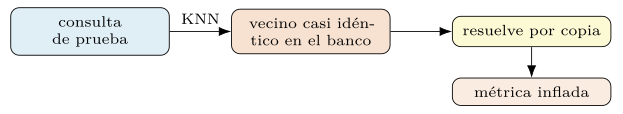
Una práctica higiénica cierra el asunto: deduplicar el corpus antes de partir, de modo que ninguna línea de registro —ni una variante trivial suya— aparezca en dos particiones a la vez. En seguridad, donde los registros repiten plantillas y difieren en un campo, esta deduplicación por similitud, no solo por igualdad exacta, es la única que protege de verdad la medición. La tabla 5.6 resume las prácticas.
| Práctica | Protege contra |
|---|---|
| Deduplicar antes de partir | casi-duplicados entre particiones |
| Banco disjunto de la prueba | resolver por copia |
| Vigilar la similitud máxima | vecinos sospechosamente próximos |
| Muestreo estratificado | el sesgo de mayoría |
Desbalanceo de clases y cobertura.
El corpus de un centro de operaciones está desbalanceado por naturaleza: el tráfico benigno supera con mucho a cualquier categoría de incidente. El arranque ingenuo hereda ese desbalance —baraja el entrenamiento y acepta las primeras trazas que pasan el filtro—, de modo que el conjunto de demostraciones tiende a poblarse de la clase mayoritaria, justo la que el modelo menos necesita ver. El resultado es un prompt que refuerza el sesgo de mayoría (sección 5.1) y clasifica de menos los incidentes raros, que son los que importan.
La defensa es buscar cobertura, no solo aciertos. Sembrar el conjunto de demostraciones con al menos un ejemplo de cada categoría —muestreo estratificado—, o imponer un tope por clase para que ninguna domine, equilibra la evidencia que ve el modelo. La búsqueda aleatoria puede perseguir este objetivo de forma indirecta si la métrica que guía la selección de candidatos premia el equilibrio: medir con \(F_1\) macro o con el coeficiente de correlación de Matthews (capítulo 4) (Matthews 1975), en lugar de la exactitud global, hace que un conjunto sesgado puntúe peor y, por tanto, pierda frente a uno con cobertura.
El principio general es que el conjunto de demostraciones es un resumen de la tarea, y un resumen que omite las clases raras enseña una tarea distinta de la real. En dominios desbalanceados, la cobertura de las clases minoritarias pesa más que un puñado extra de ejemplos de la mayoría, y conviene fijarla como restricción explícita del arranque, no confiarla al azar del barajado.
El formato de la demostración.
Una demostración no es un dato abstracto: es texto, y su forma exacta —qué campos se muestran, con qué etiquetas, en qué orden, con qué delimitadores— la fija el adaptador (capítulo 2). Esa forma no es indiferente. Por las cabezas de inducción (sección 5.1), el modelo completa con fiabilidad un patrón que ya ha visto repetido; si las demostraciones y la consulta comparten exactamente la misma plantilla de serialización, la copia opera limpia; si difieren, el patrón se rompe y la señal se degrada.
De aquí una regla que el sistema garantiza por construcción y que conviene no sabotear: las demostraciones deben serializarse con el mismo adaptador que la consulta. Cambiar el adaptador entre la compilación y el despliegue invalida las demostraciones arrancadas, porque las presenta en un formato que el modelo no asocia con la tarea aprendida. Es un error fácil de cometer al migrar un programa compilado, y se manifiesta como una caída de calidad sin causa aparente.
La forma también interactúa con el coste. Un formato verboso —campos largos, muchos delimitadores— gasta más tokens por demostración, y el gasto se multiplica por el número de ellas (sección 5.3). El equilibrio entre un formato legible para las cabezas de inducción y uno económico en contexto es otra variable que, en principio, el optimizador puede explorar, y que en la práctica conviene dejar en manos del adaptador por defecto salvo razón de peso.
Optimización conjunta, ensembles y robustez
Este capítulo optimiza las demostraciones con la instrucción fija; el siguiente (capítulo 6) hará lo contrario. Pero las dos piezas no son independientes: la mejor instrucción depende de qué ejemplos la acompañan, y las mejores demostraciones dependen de qué orden las precede. Optimizar una con la otra congelada es un ascenso por coordenadas —barato y a menudo suficiente—, pero puede quedarse en un óptimo local que la búsqueda conjunta supera.
Los optimizadores más avanzados tratan ambas como un mismo espacio. MIPROv2 propone instrucciones candidatas y conjuntos de demostraciones, y busca la combinación que mejor mide, guiada por un modelo bayesiano del espacio (Opsahl-Ong et al. 2024). Las variantes evolutivas y reflexivas, como GEPA, mutan instrucciones y ejemplos a la vez y reescriben el prompt a partir de la retroalimentación de los fallos (Agrawal et al. 2025). En todos los casos, las demostraciones del presente capítulo dejan de ser el producto final y pasan a ser una de las dos manos que el optimizador conjunto mueve.
La consecuencia para el lector es de orden, no de sustancia. Conviene dominar primero la optimización de demostraciones aislada —es más simple y aclara las ideas— y abordar después la conjunta, sabiendo que la segunda subsume a la primera. El capítulo siguiente recoge ese testigo desde el lado de las instrucciones, y el de flujos (capítulo 7) mostrará la optimización conjunta sobre programas de varias etapas.
Ensembles de programas.
La búsqueda aleatoria descarta todo su trabajo menos uno: se queda con el mejor candidato y tira los demás. Pero varios conjuntos de demostraciones distintos, todos razonablemente buenos, cometen errores distintos, y combinarlos puede superar al mejor individual. Esa es la idea del ensemble: en lugar de elegir un ganador, agregar las predicciones de varios candidatos —por voto mayoritario en clasificación, por agregación en otras tareas— para ganar robustez.
from dspy.teleprompt import BootstrapFewShotWithRandomSearch
from dspy.teleprompt.ensemble import Ensemble
busqueda = BootstrapFewShotWithRandomSearch(metric=f1_macro,
num_candidate_programs=8)
compilado = busqueda.compile(clasificar, trainset=entreno, valset=desarrollo)
# combinar los mejores candidatos en un solo programa votante
conjunto = Ensemble(reduce_fn=voto_mayoritario).compile(
compilado.candidate_programs[:3])El canje es claro y ya conocido: el ensemble eleva la calidad y la estabilidad a cambio de multiplicar el coste de inferencia, porque ejecuta varios programas por consulta. Tiene sentido donde el acierto vale más que la latencia —un triaje de incidentes que escala a un analista solo los casos dudosos— y estorba donde el volumen manda. La ganancia del ensemble sobre el mejor candidato individual, en el corpus de seguridad, queda nula en este banco: puntos sobre el mejor candidato individual, porque los programas de arranque comparten aciertos y errores.
Determinismo y reproducibilidad.
El arranque es un proceso estocástico —baraja ejemplos, muestrea trazas— y, sin cuidado, daría demostraciones distintas en cada corrida, rompiendo la reproducibilidad que el libro defiende (capítulo 10). Tres palancas lo vuelven determinista. La semilla fija el orden del barajado y la secuencia de candidatos de la búsqueda aleatoria. La temperatura a cero en el teacher hace que sus trazas no varíen entre ejecuciones. Y la caché de llamadas al modelo garantiza que repetir la compilación reutilice las mismas respuestas en vez de regenerarlas.
Con las tres fijadas, la compilación es una función pura: el mismo programa, el mismo corpus, el mismo modelo y la misma semilla producen exactamente las mismas demostraciones. Esa pureza es la que permite versionar el artefacto (sección 5.4) con la confianza de que describe un proceso repetible, y la que convierte una corrida de optimización en un experimento auditable en lugar de un golpe de suerte irrepetible.
El matiz a recordar es que el determinismo depende del modelo. Un endpoint remoto puede cambiar de versión sin aviso y alterar las trazas pese a la temperatura cero; por eso conviene fijar también la versión del modelo y, cuando la reproducibilidad sea estricta, archivar las respuestas cacheadas junto al artefacto compilado.
Modos de fallo y depuración.
El arranque falla de maneras reconocibles, y saber leerlas ahorra horas. El fallo más común es el pozo seco: el optimizador no reúne demostraciones porque la probabilidad de éxito \(p\) es casi nula (sección 5.5). El síntoma es un conjunto de demostraciones vacío o raquítico; la causa, un programa base demasiado débil o un umbral de filtro demasiado estricto; el remedio, un teacher fuerte (sección 5.4) o un umbral más laxo.
El segundo es el conjunto degenerado: todas las demostraciones de una misma clase, o con razonamientos que aciertan por el camino equivocado (secciones 5.7 y 5.4). El síntoma es una validación decente pero un sesgo marcado hacia una clase; el diagnóstico, inspeccionar las demostraciones seleccionadas (sección 5.4). El tercero es el sobreajuste a la validación: con muchos candidatos, la búsqueda aleatoria puede elegir el que, por azar, mejor encaja con el conjunto de desarrollo concreto, sin generalizar. El síntoma es la brecha entre validación y prueba; la defensa, un conjunto de validación amplio y representativo, y desconfiar de mejoras que solo aparecen al subir mucho el número de candidatos.
La rutina de depuración se deduce de la lista: medir \(p\) con una pasada corta antes de lanzar la compilación cara, inspeccionar siempre las demostraciones elegidas antes de desplegar, y comparar la cifra de validación con la de una prueba reservada para detectar el sobreajuste. Las tres comprobaciones cuestan poco y atrapan la mayoría de los desastres antes de que lleguen a producción.
Una receta de decisión.
Las familias del capítulo no compiten por un trono: cada una ocupa un nicho de presupuesto y de tarea (sección 5.6). La figura 5.9 condensa la elección en un árbol de decisión que parte de tres preguntas: si el modelo ya resuelve la tarea de cero ejemplos, si las entradas son homogéneas o variadas, y de cuánto presupuesto de compilación se dispone.
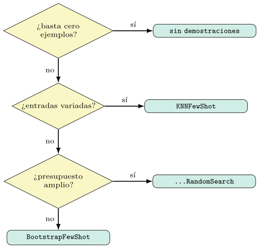
El árbol es una guía, no un dogma. Su primera rama recuerda que la opción más barata —no inyectar demostraciones— a veces gana (sección 5.4), y por eso encabeza el diagrama. Las demás reparten el terreno según la geometría de la tarea y el dinero disponible. Pero la última palabra, como en todo el libro, la tiene la medición: el árbol propone un punto de partida razonable, y la validación sobre el corpus concreto confirma o corrige la elección.
Coste en números, diversidad, datos y significancia
La ecuación (5.1) da el coste esperado en abstracto; conviene ponerle cifras. Para reunir \(m\) demostraciones con probabilidad de éxito \(p\) por intento, el número esperado de ejecuciones del programa es \(m/p\), y su varianza, por ser suma de geométricas independientes, es \(m(1-p)/p^2\). La tabla 5.7 traduce esto a un caso típico, \(m=4\) demostraciones, para distintos valores de \(p\).
| \(p\) | 0,8 | 0,5 | 0,2 | 0,05 |
|---|---|---|---|---|
| ejecuciones esperadas (\(m/p\)) | 5 | 8 | 20 | 80 |
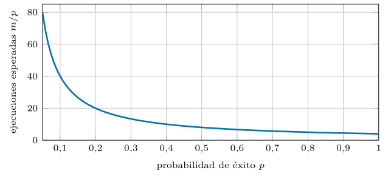
La lectura, que la figura 5.10 hace visible, confirma la advertencia de la sección 5.5 con números: pasar de un programa base que acierta cuatro de cada cinco veces a uno que acierta una de cada veinte multiplica por dieciséis el coste del arranque. La varianza, además, crece más deprisa aún —como \(1/p^2\)—, de modo que con \(p\) bajo no solo el coste medio se dispara, sino que se vuelve impredecible. Estimar \(p\) con una pasada corta antes de la compilación cara (sección 5.8) deja de ser una recomendación de estilo y se convierte en una previsión presupuestaria.
Diversidad y deduplicación del conjunto.
Reunir demostraciones que aciertan no basta: si son redundantes entre sí, el conjunto gasta contexto sin aportar información nueva. Cuatro variantes casi idénticas de un mismo incidente enseñan una sola cosa cuatro veces y dejan sin cubrir el resto de la tarea. El objetivo no es solo la calidad individual de cada demostración, sino la información conjunta del grupo, y maximizarla exige penalizar la redundancia.
El criterio clásico para ello es la relevancia marginal máxima: elegir, en cada paso, la demostración que más aporta dada la que ya se ha elegido, equilibrando su calidad con su disimilitud respecto a las demás. Formalmente, se selecciona la candidata \(d\) que maximiza \[\begin{equation} \lambda\,\mathrm{calidad}(d) - (1-\lambda)\,\max_{d'\in S}\, \mathrm{sim}(d, d'), \end{equation}\] donde \(S\) es el conjunto ya elegido, \(\mathrm{sim}\) la similitud en el espacio de embeddings (sección 5.5) y \(\lambda\) regula el peso entre calidad y diversidad. Con \(\lambda=1\) se ignora la redundancia; al bajarlo, el conjunto se diversifica.
En la práctica del libro, la deduplicación cumple dos papeles. Antes de partir el corpus, elimina casi-duplicados entre particiones y protege la medición (sección 5.7). Dentro del arranque, evita que el conjunto de demostraciones colapse sobre un puñado de casos parecidos, un riesgo real en seguridad, donde miles de registros comparten plantilla y difieren en un campo. Un conjunto diverso es, otra vez, un mejor resumen de la tarea.
La métrica de similitud.
La selección por vecinos (sección 5.2) descansa en una medida de parecido entre vectores, y la elección de esa medida no es neutral. La similitud del coseno —el coseno del ángulo entre dos vectores— mide orientación e ignora magnitud, y es la opción por defecto porque dos textos sobre el mismo asunto apuntan en la misma dirección aunque difieran en longitud. El producto escalar sí incorpora la magnitud, y favorece vectores de norma grande, lo cual conviene o estorba según cómo se hayan entrenado los embeddings.
El matiz operativo es la normalización. Si los vectores se normalizan a norma unidad, el coseno y el producto escalar coinciden, y la similitud del coseno equivale a la distancia euclídea monótonamente: ordenar por coseno descendente es ordenar por distancia ascendente. Por eso los índices aproximados (sección 5.5) suelen trabajar sobre vectores normalizados, donde la recuperación por producto escalar reproduce el orden del coseno a coste menor. La regla práctica es normalizar siempre que el embedder no lo haga ya, y comprobar con el benchmark de recuperación (sección 5.13) que la medida elegida ordena los vecinos como la tarea espera.
Cuántos datos hacen falta.
Una pregunta recurrente es cuánto corpus exige la optimización de demostraciones. La respuesta se deduce de la mecánica ya vista, y es más modesta de lo temido. El entrenamiento solo necesita ejemplos suficientes para que el muestreo por rechazo reúna su cupo: con \(m\) demostraciones a probabilidad \(p\), bastan del orden de \(m/p\) ejemplos útiles (sección 5.9), unas pocas decenas en tareas con \(p\) razonable. A diferencia del ajuste de pesos, el arranque no consume miles de ejemplos.
El conjunto de validación es el que merece cuidado, porque de él sale la señal que elige entre candidatos. Demasiado pequeño, su medición es ruidosa y la búsqueda aleatoria sobreajusta a su azar (sección 5.8); suficientemente amplio y representativo, distingue de verdad un conjunto de demostraciones de otro. La cifra exacta depende de la varianza de la métrica —que el capítulo 4 enseñó a estimar—, pero la asimetría es clara: ante datos escasos, conviene gastarlos en validación antes que en entrenamiento, porque el cuello de botella del método está en elegir, no en arrancar.
¿Es real la mejora? Significancia.
Cuando la búsqueda aleatoria informa de que el candidato A mide mejor que el B en validación, cabe preguntar si la diferencia es real o ruido del muestreo. La medición sobre un conjunto finito es una estimación, y dos estimaciones cercanas pueden invertir su orden en otro conjunto. Tratar cada décima de mejora como ganancia genuina lleva a perseguir espejismos y a sobreajustar la validación.
El instrumental del capítulo 4 se aplica aquí sin cambios. La diferencia entre dos candidatos sobre los mismos ejemplos es una comparación emparejada, y su significancia se evalúa con una prueba sobre los aciertos y fallos pareados, o con intervalos de confianza por bootstrap sobre la métrica. La regla prudente es preferir el candidato más simple —menos demostraciones, menor coste— salvo que su rival lo supere por un margen que la prueba declare significativo. Una mejora de tamaño comparable al ruido no justifica un prompt más caro.
Esta disciplina cierra el círculo con la complejidad muestral (sección 5.5): subir mucho el número de candidatos no solo cuesta más, sino que aumenta la probabilidad de que el ganador lo sea por azar. Hay un punto, dictado por la varianza de la métrica y el tamaño de la validación, más allá del cual añadir candidatos compra ruido, no calidad.
Demostraciones frente al ajuste de pesos
El arranque de demostraciones es una forma de especializar un modelo sin tocar sus pesos: toda la adaptación vive en el contexto. La alternativa clásica es el ajuste fino —modificar los parámetros con ejemplos etiquetados—, hoy asequible gracias a métodos de bajo rango como LoRA, que entrenan una fracción minúscula de los pesos (Hu et al. 2022). Conviene situar ambos enfoques, porque resuelven el mismo problema por caminos opuestos y la elección tiene consecuencias.
Las demostraciones ganan en agilidad y reversibilidad. No requieren infraestructura de entrenamiento, se versionan como un artefacto de texto (sección 5.4), se cambian al instante y funcionan sobre modelos accesibles solo por API, cuyos pesos no están al alcance. Su coste es de inferencia: cada demostración ocupa contexto y tokens en cada llamada (sección 5.3). El ajuste de pesos invierte el canje: paga un entrenamiento por adelantado y, a cambio, internaliza el conocimiento sin gastar contexto en producción, lo cual rinde cuando el volumen de inferencia es alto y la tarea, estable.
La frontera no es nítida, y el criterio vuelve a ser económico. Para iterar rápido, prototipar y operar con pocos datos, las demostraciones dominan. Para un servicio de alto volumen con un corpus abundante y una tarea fija, el ajuste de pesos amortiza su coste. Y, como muestra la sección siguiente, los dos enfoques no se excluyen: las demostraciones arrancadas pueden ser, ellas mismas, el material con el que se ajustan los pesos. La tabla 5.8 enfrenta los dos canjes.
| Demostraciones | Ajuste de pesos | |
|---|---|---|
| Adaptación | en el contexto | en los parámetros |
| Coste | de inferencia (contexto) | de entrenamiento, único |
| Agilidad | se cambian al instante | requiere reentrenar |
| Modelos por API | sí | no (pesos cerrados) |
BootstrapFinetune: del contexto a los pesos.
DSPy cierra el puente entre ambos mundos con un optimizador que usa las trazas arrancadas no para inyectarlas en el contexto, sino para ajustar los pesos del student (Khattab et al. 2024). El procedimiento encadena lo ya visto: arranca demostraciones con la métrica como filtro, y después convierte ese conjunto en datos de entrenamiento supervisado con los que afina el modelo. Las demostraciones dejan de viajar en cada prompt y pasan a residir en los parámetros.
from dspy.teleprompt import BootstrapFinetune
# arranca trazas con un teacher fuerte y afina con ellas un student abierto
opt = BootstrapFinetune(metric=f1_macro)
afinado = opt.compile(clasificar, trainset=entreno, teacher=programa_fuerte)El interés del método es doble. Hereda la principal virtud del arranque —generar sus propios datos, con razonamiento incluido, sin etiquetado manual (sección 5.4)— y la combina con la del ajuste de pesos: un prompt corto en producción, porque el conocimiento ya está en el modelo. Es la destilación maestro–aprendiz (sección 5.2) llevada a su conclusión: el teacher fuerte no solo siembra el contexto del student, sino que reescribe sus pesos. La figura 5.11 encadena el proceso.
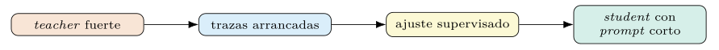
El precio es el del ajuste de pesos: exige un modelo cuyos parámetros se puedan tocar —descarta los accesibles solo por API— e infraestructura de entrenamiento aparte del servidor de inferencia. Por eso su ganancia frente al arranque puro en contexto no se mide en el banco de este capítulo, que sirve el modelo por vLLM sin canal de entrenamiento; la decisión, como siempre, sale de comparar calidad y coste, no de la novedad del método.
Un arranque multietapa, trazado.
La sección 5.3 explicó que una sola etiqueta final siembra demostraciones en todos los módulos; conviene verlo sobre un caso. Considérese un programa de dos etapas para el SOC: un primer módulo resumir condensa un registro extenso, y un segundo clasificar asigna la categoría a partir del resumen. Solo hay etiqueta para la categoría final; el resumen intermedio no está anotado.
class Triaje(dspy.Module):
def __init__(self):
self.resumir = dspy.ChainOfThought("registro -> resumen")
self.clasificar = dspy.ChainOfThought("resumen -> categoria")
def forward(self, registro):
r = self.resumir(registro=registro).resumen
return self.clasificar(resumen=r)
opt = dspy.BootstrapFewShot(metric=exactitud, max_bootstrapped_demos=4)
flujo = opt.compile(Triaje(), trainset=entreno)Al ejecutar el programa sobre un ejemplo cuya categoría es exfiltracion, el arranque registra la traza completa: el registro de entrada, el resumen que produjo resumir, y la categoría que produjo clasificar. Si la categoría final acierta, el filtro acepta la traza y reparte sus piezas: la pareja registro -> resumen se fija como demostración del primer módulo, y la pareja resumen -> categoria, del segundo. Una etiqueta ha generado datos de entrenamiento para dos predictores, uno de los cuales —el resumidor— no tenía ninguna anotación propia.
for nombre, pred in flujo.named_predictors():
print(nombre, len(pred.demos)) # resumir: 4 clasificar: 4Aquí se ve, en concreto, la solución a la asignación de crédito del capítulo 1. El resumidor aprende qué condensar no porque alguien etiquetara resúmenes buenos, sino porque sus salidas, cuando condujeron a una clasificación correcta, se conservaron como ejemplo. La señal escasa de la etiqueta final se ha propagado hacia atrás, sin gradientes y sin anotación intermedia, hasta convertirse en demostraciones para cada pieza del programa.
Presupuesto de contexto, deriva y límites
Las demostraciones compiten por un recurso finito: la ventana de contexto (capítulo 2). Cada prompt reparte su espacio entre la instrucción, las demostraciones y la consulta, y ese reparto es un juego de suma cero. Inyectar más ejemplos deja menos sitio para entradas largas, y en un SOC las entradas largas abundan —volcados de registros, cadenas de eventos—, de modo que el número de demostraciones no se decide solo por su rendimiento, sino por cuánto contexto dejan libre para la consulta real.
El cálculo es prosaico pero ineludible. Si la ventana admite \(C\) tokens, la instrucción ocupa \(I\), cada demostración un promedio de \(\bar{d}\) y se reserva un margen de salida \(O\), el número de demostraciones que caben sin arriesgar truncamiento es a lo sumo \((C - I - O - q_{\max})/\bar{d}\), con \(q_{\max}\) la consulta más larga prevista. Pasar de ese tope no solo encarece: arriesga que el modelo trunque la entrada y pierda información, un fallo silencioso y difícil de diagnosticar.
La consecuencia práctica refuerza la sección 5.3: el número óptimo de demostraciones no es el que más mide en abstracto, sino el que más mide dentro del presupuesto de contexto de la tarea. En dominios de entradas largas conviene demostraciones concisas —resumidas, recortadas a lo esencial— o la selección dinámica de KNNFewShot, que muestra pocas y muy pertinentes en vez de muchas genéricas (sección 5.2).
Deriva de distribución y refresco.
Un conjunto de demostraciones optimizado retrata la tarea tal como era cuando se compiló. En seguridad esa foto caduca: aparecen familias nuevas de malware, cambian los patrones de ataque, se renombran las categorías del SOC. La deriva de distribución erosiona en silencio la calidad de un programa compilado, porque sus demostraciones siguen ilustrando un mundo que ya no es el de las consultas entrantes.
El síntoma es una caída lenta de la métrica en producción sin cambios en el código, y la defensa es tratar el conjunto compilado como un artefacto perecedero (capítulo 10). Vigilar la métrica en producción contra una muestra etiquetada reciente detecta la deriva; recompilar con corpus actualizado la corrige. La selección dinámica resiste mejor el paso del tiempo: si el banco de KNNFewShot se mantiene al día, cada consulta recupera ejemplos recientes sin necesidad de recompilar el programa entero, lo cual convierte el refresco en una tarea de datos, no de optimización.
La lección encaja con la tesis del libro. Un prompt no es un texto que se escribe una vez, sino un artefacto que se mide, se versiona y se mantiene; y las demostraciones, por venir de los datos, heredan la fecha de caducidad de los datos. Programar prompts incluye, por tanto, programar su revisión. La figura 5.12 dibuja la caída y el refresco.
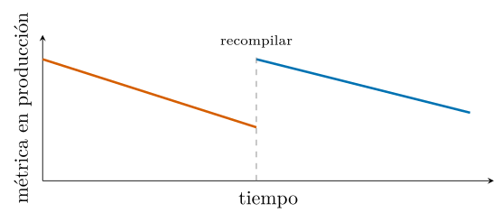
Demostraciones negativas y contrastivas.
Hasta aquí, toda demostración ha sido un acierto a imitar. Cabe preguntarse si mostrar también errores—un caso mal clasificado, marcado como tal—ayuda al modelo a evitar la confusión. La intuición es tentadora en clasificación de seguridad, donde ciertas parejas de categorías se confunden a menudo —una exploración legítima y un escaneo hostil comparten rasgos— y un contraste explícito podría afilar la frontera.
La evidencia aconseja cautela. Como las demostraciones señalan sobre todo el formato y el espacio de etiquetas (sección 5.1), incluir ejemplos etiquetados como «incorrectos» introduce una estructura que el modelo puede malinterpretar, copiando la etiqueta errónea en lugar de aprender a evitarla. El arranque estándar, por diseño, conserva solo aciertos (sección 5.6), y esa decisión es prudente: enseña la conducta deseada sin arriesgar que el modelo imite la indeseada.
Cuando el contraste importa, la vía robusta no es la demostración negativa, sino la instrucción que nombra la distinción —«distínguase un escaneo autorizado de uno hostil por la presencia de…»— optimizada en el capítulo siguiente (capítulo 6). La regla y el ejemplo se reparten el trabajo: el ejemplo muestra el caso correcto, la instrucción advierte del error frecuente. Mezclar ambos en una demostración ambigua suele rendir menos que separarlos con claridad.
Una lista de comprobación.
El capítulo deja un método, no una receta única; conviene condensarlo en una secuencia de comprobaciones que ordena el trabajo de optimizar demostraciones sobre una tarea concreta. No sustituye al criterio, pero atrapa los descuidos más caros antes de que lleguen a producción.
Particionar el corpus en entrenamiento, validación y prueba, y deduplicar entre ellos para proteger la medición (sección 5.7).
Fijar una métrica de filtrado estricta y una de evaluación realista, y no confundirlas (sección 5.6).
Estimar la probabilidad de éxito \(p\) con una pasada corta para prever el coste del arranque (sección 5.9).
Empezar por el baseline de cero ejemplos y el etiquetado: si una técnica cara no los supera, descartarla (sección 5.6).
Vigilar la cobertura de clases en el conjunto elegido, sobre todo con datos desbalanceados (sección 5.7).
Comprobar que la mejora del ganador es significativa, no ruido (sección 5.9).
Inspeccionar las demostraciones seleccionadas antes de desplegar (sección 5.4).
Versionar el artefacto y planificar su refresco ante la deriva (sección 5.11).
Recorrida esta lista, la optimización de demostraciones deja de ser un conjuro y se vuelve un procedimiento auditable. El capítulo siguiente añade la otra mitad del prompt —la instrucción— y muestra cómo optimizar ambas, por separado y en conjunto.
Caché, temperatura del arranque y búsqueda del orden
La búsqueda aleatoria sería prohibitiva si cada candidato repagara todas sus llamadas al modelo, pero no lo hace, gracias a la caché. DSPy memoiza las respuestas del modelo con una clave que combina el modelo, sus parámetros de muestreo y el prompt exacto; ante una llamada repetida, devuelve la respuesta guardada en lugar de volver a pagarla (Khattab et al. 2024). El efecto sobre el coste del capítulo es directo, porque los candidatos de la escalera (sección 5.6) comparten muchas llamadas.
El ahorro tiene dos fuentes. Durante el arranque, evaluar varios candidatos sobre el mismo conjunto de validación repite, para las demostraciones comunes, los mismos prompts, y la caché los sirve una sola vez. Entre compilaciones, reanudar una corrida interrumpida no recomienza de cero: las trazas ya generadas siguen en la caché. La consecuencia es que el coste real de la búsqueda crece muy por debajo del producto «candidatos por validación» que sugiere el cálculo ingenuo de la sección 5.4.
El matiz a recordar es que la clave de la caché incluye el prompt exacto: cualquier cambio —una demostración distinta, otro orden, otra instrucción— produce una clave nueva y una llamada nueva. Por eso la caché acelera la reevaluación de lo idéntico, no la exploración de lo distinto, y por eso el coste de la búsqueda sigue dominado por cuántas configuraciones realmente nuevas se prueban.
La temperatura del arranque.
La temperatura de muestreo —que regula cuánto se aparta el modelo de su salida más probable (Holtzman et al. 2020)— juega un papel sutil en el arranque. A temperatura cero, el modelo es determinista: ejecutado dos veces sobre el mismo ejemplo, produce la misma traza. Eso garantiza la reproducibilidad (sección 5.8), pero limita la diversidad del repertorio de trazas candidatas: si la primera ejecución falla, la repetición también fallará, y ese ejemplo nunca aportará una demostración.
Una temperatura positiva invierte el canje. Al introducir variación, permite que un ejemplo que falló en un intento acierte en otro, y enriquece el conjunto de trazas entre las que el filtro elige (sección 5.6). En programas con razonamiento, además, distintas temperaturas exploran distintas cadenas de pensamiento, algunas mejores que la voraz. El precio es la pérdida de determinismo, que se recupera fijando la semilla del muestreo.
La práctica habitual combina ambos regímenes. El teacher (sección 5.2) opera a temperatura baja para que sus trazas sean fiables y reproducibles; cuando el repertorio escasea porque \(p\) es bajo (sección 5.5), subir la temperatura del arranque es una palanca —junto al teacher fuerte y el umbral laxo— para que el muestreo por rechazo reúna su cupo. La temperatura, en suma, es otro hiperparámetro del arranque, y se fija midiendo, no por costumbre. La tabla 5.9 opone los dos regímenes.
| Temperatura cero | Temperatura positiva | |
|---|---|---|
| Determinismo | sí, reproducible | no (fijar semilla) |
| Repertorio | limitado | diverso |
| Si un ejemplo falla | fallará siempre | puede acertar en otro intento |
Cómo se busca un buen orden.
La sección 5.3 estableció que el orden importa y que DSPy lo trata como variable de búsqueda; queda ver cómo se halla uno bueno sin malgastar presupuesto. La vía directa —probar permutaciones y medir cada una en validación— funciona, pero su coste crece con el factorial del número de demostraciones, intratable más allá de unas pocas. La búsqueda aleatoria muestrea ese espacio en vez de recorrerlo (sección 5.6), pero cabe ser más astuto.
El trabajo sobre orden de prompts (Lu et al. 2022) propuso una pista sin etiquetas: los buenos órdenes tienden a producir predicciones de entropía equilibrada sobre las clases —ni siempre la misma etiqueta, ni un reparto degenerado—, mientras que los órdenes patológicos colapsan hacia una clase. Medir esa entropía sobre un conjunto sin anotar permite descartar de antemano los órdenes peores y concentrar las evaluaciones costosas en los prometedores, una criba barata antes de la medición cara. La figura 5.13 contrasta un perfil equilibrado con uno colapsado.
La lección general trasciende el orden. Siempre que una señal barata —entropía, diversidad, longitud— correlacione con la calidad, conviene usarla para podar el espacio antes de gastar la métrica completa. Es el mismo principio que anima los minilotes y la poda del capítulo siguiente (capítulo 6) y que separa una búsqueda eficiente de una que mide a ciegas.
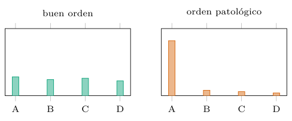
Caso de estudio: optimizar el triaje del SOC
Conviene reunir las piezas del capítulo en un experimento completo sobre la tarea del libro: clasificar registros de un centro de operaciones. El guion sigue la lista de comprobación (sección 5.11) de principio a fin —partir y deduplicar, fijar las métricas, comparar familias, guardar el ganador— y deja ver cómo encajan las secciones anteriores en una sola corrida.
import dspy
from dspy.teleprompt import (LabeledFewShot, BootstrapFewShot,
BootstrapFewShotWithRandomSearch)
# 1. datos: partir y deduplicar para proteger la medicion
entreno, desarrollo, prueba = particionar(deduplicar(corpus), 0.6, 0.2, 0.2)
# 2. metricas: estricta para filtrar, realista (macro) para evaluar
filtro = lambda e, p: int(e.categoria == p.categoria) # binaria, exacta
evaluar = f1_macro # cobertura de clases
# 3. programa base
clasificar = dspy.ChainOfThought("mensaje -> categoria")
# 4. comparar familias con la MISMA validacion
candidatos = {
"cero": clasificar,
"labeled": LabeledFewShot(k=8).compile(clasificar, trainset=entreno),
"bootstrap": BootstrapFewShot(metric=filtro, max_bootstrapped_demos=4)
.compile(clasificar, trainset=entreno),
"busqueda": BootstrapFewShotWithRandomSearch(metric=filtro,
num_candidate_programs=8)
.compile(clasificar, trainset=entreno, valset=desarrollo),
}
puntuaciones = {n: evaluar_en(p, desarrollo, evaluar)
for n, p in candidatos.items()}
# 5. quedarse con el ganador, medir en PRUEBA reservada y guardar
mejor = candidatos[max(puntuaciones, key=puntuaciones.get)]
print("prueba:", evaluar_en(mejor, prueba, evaluar))
mejor.save("salidas/triaje_soc.json")El guion encarna las decisiones del capítulo. Usa una métrica de filtrado binaria y estricta y una de evaluación por \(F_1\) macro (secciones 5.6 y 5.7) (Matthews 1975); compara todas las familias contra el mismo conjunto de desarrollo; reserva la prueba para una sola medición final, libre de contaminación (sección 5.7); y versiona el artefacto ganador (sección 5.4). La selección dinámica por KNNFewShot, omitida arriba por brevedad, se añadiría como un candidato más cuyo coste de inferencia (sección 5.5) entra en la comparación.
| Rasgo dominante de la tarea | Familia de partida |
|---|---|
| el modelo ya acierta de cero ejemplos | sin demostraciones |
| banco etiquetado fiable, prototipo | LabeledFewShot |
| importa el razonamiento intermedio | BootstrapFewShot |
| hay presupuesto y se exprime calidad | ...RandomSearch |
| entradas muy variadas, banco grande | KNNFewShot |
| alto volumen, corpus abundante, tarea fija | BootstrapFinetune |
La tabla 5.10 condensa esa elección en una correspondencia entre el rasgo dominante de la tarea y la familia con la que empezar, recogiendo también el ajuste de pesos (secciones 5.10 y 5.10). Las cifras de la comparación sobre el corpus de seguridad —exactitud, \(F_1\) macro, coste de compilación y de inferencia de cada familia— se recogen en la tabla 5.11 al final del capítulo, medidas al ejecutar el código.
Resultados comparados y el embedder.
La elección del embedder condiciona la selección por similitud: un modelo de embeddings que separa bien el dominio recupera vecinos relevantes; uno genérico recupera ruido. La comparación entre embedders se guía por benchmarks públicos como MTEB (Muennighoff et al. 2023), que miden la calidad de recuperación a través de tareas; un modelo compacto como all-MiniLM-L12-v2 ofrece un buen punto de partida, y uno mayor como bge-base suele mejorar la recuperación a cambio de coste.
El capítulo culmina en una comparación de todas las familias —LabeledFewShot, BootstrapFewShot y su búsqueda aleatoria— sobre el corpus de seguridad, con su exactitud, su coste de compilación y su coste de inferencia (tabla 5.11). Su lectura honesta —ninguna técnica gana en todo: la mejor calidad cuesta más— prepara la optimización de instrucciones del capítulo siguiente.
| Familia | Exactitud (%) | F1 macro (%) | Compil. (Mtok) | Infer. (tok) |
|---|---|---|---|---|
| Cero ejemplos | ||||
LabeledFewShot |
||||
BootstrapFewShot |
||||
| + búsqueda aleatoria |